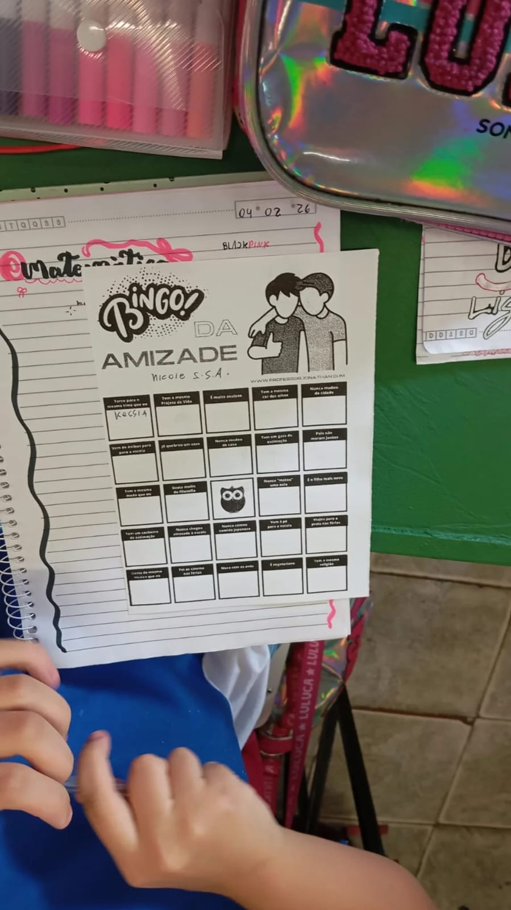
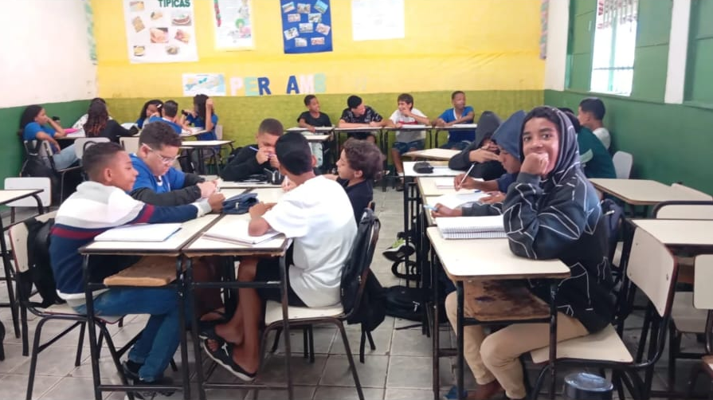

É um compromisso diário com a formação de cidadãos íntegros, autônomos e solidários.
Por isso, organizamos nossa rotina pensando nas necessidades específicas de cada fase da vida escolar, sempre guiados por valores que sustentam toda a nossa prática pedagógica.

Email: escola.10413@educacao.mg.gov.br
Telefone: (31) 3671 7513